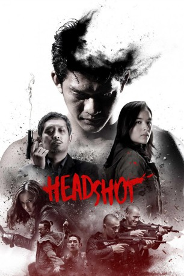

#6309 Headshot
 gesehen am 08.06.2017
gesehen am 08.06.2017
 
 IMDB-Wertung: 6.5 / 10
IMDB-Wertung: 6.5 / 10  Metascore: 0
Metascore: 0 
Ein junger Mann (Iko Uwais) wird an einem Strand angespült. Er hat eine schwere Kopfverletzung und keine Ahnung, wer er ist. Eine junge Ärztin nimmt sich seiner an und hilft ihm, wieder gesund zu werden. Doch bald lernt der junge Mann seine Vergangenheit schneller ein, als ihm lieb ist…
Jahr: 2016
Dauer: 118 Minuten
FSK: Not Rated
Land: Indonesien Studio: Koch MediaTonspuren:
Untertitel: Deutsch,
Auflösung: 1080p (1920x808) Größe: 5928 MB
Genre: Action, Thriller, Drama
Regisseur: Kimo Stamboel, Timo Tjahjanto
Drehbuch: E.B. White
Soundtrack:
Darsteller:
 Iko Uwais als Ishmael
Iko Uwais als Ishmael- Chelsea Islan als Ailin
- Sunny Pang als Lee
- Very Tri Yulisman als Besi
- Julie Estelle als Rika
- Ario Bayu als Jakarta Police Captain
- Zack Lee als Tano
- Yayu A.W. Unru als Romli
- Ganindra Bimo als Bondi
- Egy Fedly als Gang Boss Anto
- Hirooki Goto als Japanese Gangster
- Gusti Achmad Habibi als Sickly Inmate
- David Hendrawan als Tejo
- Epy Kusnandar als Romli
- Bront Palarae als Policeman
- Lady Shelvia als Nurse
- Vio Shevchenko als Young Ishmael
- Avrilla Sigarlaki als Mina
- Yandi 'Piranha' Sutsina als Machete Thug
Datei: X:\FSK18-Eastern\Headshot (2016, FSKNot Rated, 1920x808).mkv seit 07.06.2017
Festplatte: FSK18
 Es gibt insgesamt 102 Filme in der Gruppe 'FSK18-Eastern'
Es gibt insgesamt 102 Filme in der Gruppe 'FSK18-Eastern'